library(bayesrules)
library(tidyverse)
library(brms)
library(cmdstanr)
library(tidybayes)
library(ggdist)
# Plot stuff
clrs <- MetBrewer::met.brewer("Lakota", 6)
theme_set(theme_bw())
# Seed stuff
set.seed(1234)
BAYES_SEED <- 1234Reading notes
Posterior inference and prediction
The general setup
We want to know the probability that an artist in the MoMA is Gen X or younger (born after 1965). This is our \(\pi\).
We’ll use a vague \(\operatorname{Beta}(4, 6)\) prior for \(\pi\) and say that the probability is probably below 0.5, but we’re not super sure where it is exactly:
ggplot() +
stat_function(fun = ~dbeta(., 4, 6), geom = "area", fill = clrs[1])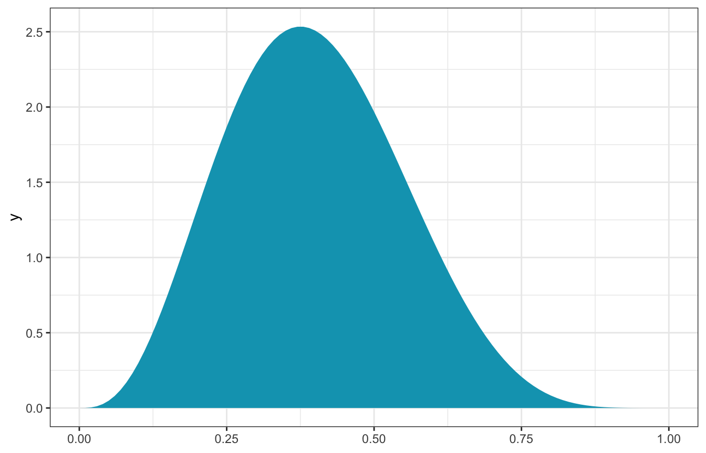
Here’s the data:
data("moma_sample", package = "bayesrules")
head(moma_sample)
## artist country birth death alive genx gender count
## 1 Ad Gerritsen dutch 1940 2015 FALSE FALSE male 1
## 2 Kirstine Roepstorff danish 1972 <NA> TRUE TRUE female 3
## 3 Lisa Baumgardner american 1958 2015 FALSE FALSE female 2
## 4 David Bates american 1952 <NA> TRUE FALSE male 1
## 5 Simon Levy american 1946 <NA> TRUE FALSE male 1
## 6 Pierre Mercure canadian 1927 1966 FALSE FALSE male 8
## year_acquired_min year_acquired_max
## 1 1981 1981
## 2 2005 2005
## 3 2016 2016
## 4 2001 2001
## 5 2012 2012
## 6 2008 2008Only 14 are Gen X:
moma_sample |>
count(genx)
## genx n
## 1 FALSE 86
## 2 TRUE 14Through the magic of conjugate families, we can calculate the exact posterior:
\[ \begin{aligned} Y &\sim \operatorname{Binomial}(100, \pi) \\ \pi &= \operatorname{Beta}(4, 6) \end{aligned} \]
Since we observe \(Y = 14\), then the actual exact posterior is
\[ \pi \mid (Y = 14) \sim \operatorname{Beta}(4 + 14, 6 + 100 - 14) \rightarrow \operatorname{Beta}(18, 92) \]
ggplot() +
stat_function(aes(fill = "Prior: Beta(4, 6)"),
fun = ~dbeta(., 4, 6), geom = "area") +
stat_function(aes(fill = "Posterior: Beta(18, 92)"),
fun = ~dbeta(., 18, 92), geom = "area") +
scale_fill_manual(values = c(clrs[2], clrs[1]))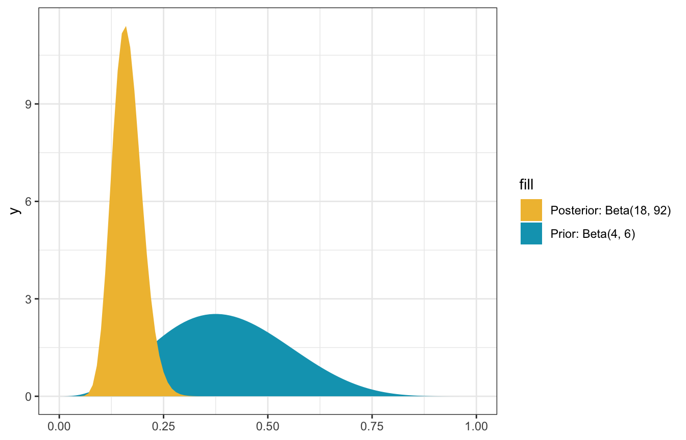
Neat! We have a posterior, but now we have to do something with it:
- Estimation
- Hypothesis testing
- Prediction
But first, for fun, here are some MCMC-based approximations of the posterior:
model_pi_brms <- brm(
bf(num_genx | trials(artworks) ~ 0 + Intercept),
data = list(num_genx = 14, artworks = 100),
family = binomial(link = "identity"),
prior(beta(4, 6), class = b, lb = 0, ub = 1),
sample_prior = TRUE, # For calculating Bayes Ratios
iter = 5000, warmup = 1000, seed = BAYES_SEED,
backend = "cmdstanr", cores = 4, refresh = 0
)
## Start sampling
## Running MCMC with 4 parallel chains...
##
## Chain 1 finished in 0.1 seconds.
## Chain 2 finished in 0.1 seconds.
## Chain 3 finished in 0.1 seconds.
## Chain 4 finished in 0.1 seconds.
##
## All 4 chains finished successfully.
## Mean chain execution time: 0.1 seconds.
## Total execution time: 0.2 seconds.
model_pi_brms_prior_only <- brm(
bf(num_genx | trials(artworks) ~ 0 + Intercept),
data = list(num_genx = 14, artworks = 100),
family = binomial(link = "identity"),
prior(beta(4, 6), class = b, lb = 0, ub = 1),
sample_prior = "only", # For calculating Bayes Ratios
iter = 5000, warmup = 1000, seed = BAYES_SEED,
backend = "cmdstanr", cores = 4, refresh = 0
)
## Start sampling
## Running MCMC with 4 parallel chains...
##
## Chain 1 finished in 0.0 seconds.
## Chain 2 finished in 0.0 seconds.
## Chain 3 finished in 0.0 seconds.
## Chain 4 finished in 0.0 seconds.
##
## All 4 chains finished successfully.
## Mean chain execution time: 0.0 seconds.
## Total execution time: 0.1 seconds.model_pi_brms
## Family: binomial
## Links: mu = identity
## Formula: num_genx | trials(artworks) ~ 0 + Intercept
## Data: list(num_genx = 14, artworks = 100) (Number of observations: 1)
## Draws: 4 chains, each with iter = 5000; warmup = 1000; thin = 1;
## total post-warmup draws = 16000
##
## Population-Level Effects:
## Estimate Est.Error l-95% CI u-95% CI Rhat Bulk_ESS Tail_ESS
## Intercept 0.16 0.03 0.10 0.24 1.00 6534 6657
##
## Draws were sampled using sample(hmc). For each parameter, Bulk_ESS
## and Tail_ESS are effective sample size measures, and Rhat is the potential
## scale reduction factor on split chains (at convergence, Rhat = 1).08-stan/genx.stan
// Things coming in from R
data {
int<lower=0> artworks;
int<lower=0> num_genx;
}
// Thing to estimate
parameters {
real<lower=0, upper=1> pi; // Proportion of Gen X artists
}
// Prior and likelihood
model {
// Prior
pi ~ beta(4, 6);
// Likelihood
num_genx ~ binomial(artworks, pi);
}model_pi_stan <- cmdstan_model("08-stan/genx.stan")pi_stan_samples <- model_pi_stan$sample(
data = list(artworks = 100, num_genx = 14),
parallel_chains = 4, iter_warmup = 2500, iter_sampling = 2500,
refresh = 0, seed = BAYES_SEED
)
## Running MCMC with 4 parallel chains...
##
## Chain 1 finished in 0.0 seconds.
## Chain 2 finished in 0.0 seconds.
## Chain 3 finished in 0.0 seconds.
## Chain 4 finished in 0.0 seconds.
##
## All 4 chains finished successfully.
## Mean chain execution time: 0.0 seconds.
## Total execution time: 0.2 seconds.8.1: Posterior estimation
Our posterior \(\operatorname{Beta}(18, 92)\) is a complete distribution, but we often need to work with summaries of that distribution. The mean here is 16% (\(\frac{18}{18 + 92} = 0.1636\)), meaning that it is most likely the case that 16% of MoMA artists are Gen X or younger, but it could be anywhere between 10-25ish%
We can calculate a 95% credible interval around the median using quantiles:
qbeta(c(0.025, 0.975), 18, 92)
## [1] 0.1009084 0.2379286There’s a 95% posterior probability that somewhere between 10% and 24% of museum artists are Gen X or younger:
post_mean <- 18 / (18 + 92)
post_median <- qbeta(0.5, 18, 92)
post_mode <- (18 - 1)/(18 + 92 - 2)
ggplot() +
stat_function(fun = ~dbeta(., 18, 92), geom = "area",
fill = colorspace::lighten(clrs[3], 0.4)) +
stat_function(fun = ~dbeta(., 18, 92), geom = "area",
xlim = qbeta(c(0.025, 0.975), 18, 92),
fill = clrs[3]) +
geom_vline(xintercept = post_mode) +
xlim(c(0, 0.4)) +
labs(x = "π")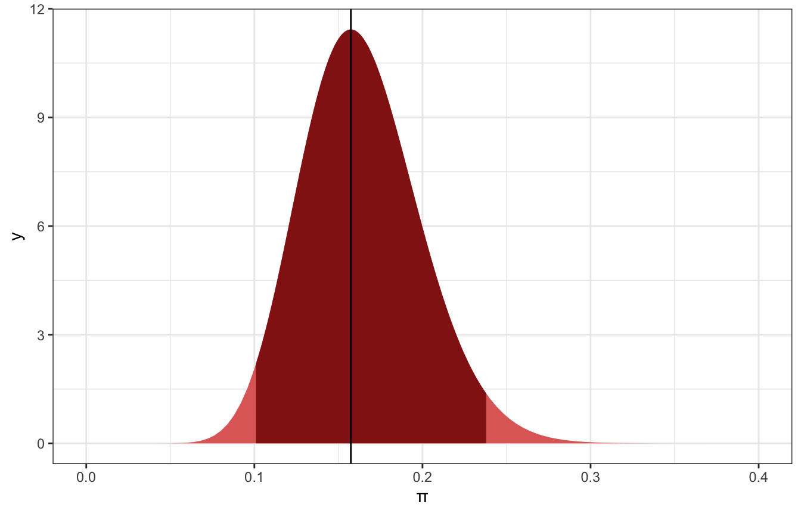
We don’t have to use 95%; that’s just arbitrary. We can use different levels:
ggplot() +
stat_function(fun = ~dbeta(., 18, 92), geom = "area",
fill = colorspace::lighten(clrs[3], 0.9)) +
stat_function(fun = ~dbeta(., 18, 92), geom = "area",
xlim = qbeta(c(0.025, 0.975), 18, 92),
aes(fill = "95%")) +
stat_function(fun = ~dbeta(., 18, 92), geom = "area",
xlim = qbeta(c(0.055, 0.945), 18, 92),
aes(fill = "89%")) +
stat_function(fun = ~dbeta(., 18, 92), geom = "area",
xlim = qbeta(c(0.1, 0.9), 18, 92),
aes(fill = "80%")) +
stat_function(fun = ~dbeta(., 18, 92), geom = "area",
xlim = qbeta(c(0.25, 0.75), 18, 92),
aes(fill = "50%")) +
geom_vline(xintercept = post_mode) +
scale_fill_manual(values = colorspace::lighten(clrs[3], c(0.1, 0.3, 0.5, 0.7))) +
xlim(c(0, 0.4)) +
labs(x = "π", fill = "Credible interval")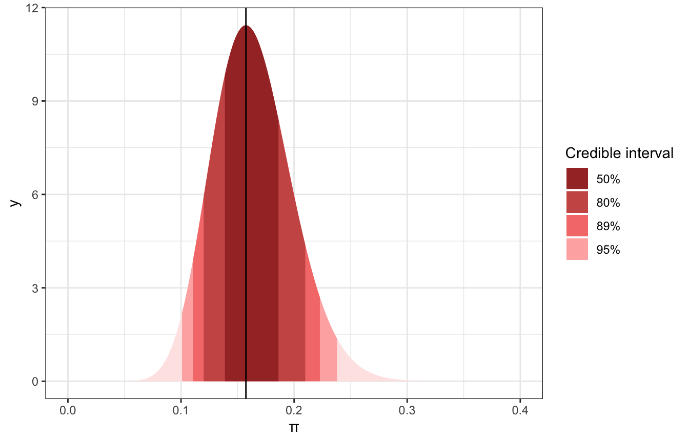
This posterior is a little lopsided, so we might want to make an interval that’s not centered at the mode of π, but instead centered at the highest posterior density.
model_pi_brms |>
spread_draws(b_Intercept) |>
median_hdci(b_Intercept, .width = c(0.5, 0.89, 0.95))
## # A tibble: 3 × 6
## b_Intercept .lower .upper .width .point .interval
## <dbl> <dbl> <dbl> <dbl> <chr> <chr>
## 1 0.162 0.138 0.184 0.5 median hdci
## 2 0.162 0.106 0.215 0.89 median hdci
## 3 0.162 0.0944 0.230 0.95 median hdcimodel_pi_brms |>
spread_draws(b_Intercept) |>
ggplot(aes(x = b_Intercept)) +
stat_slab(aes(fill_ramp = stat(level)),
.width = c(0.02, 0.5, 0.89, 0.95, 1),
point_interval = "median_hdci",
fill = clrs[3]) +
scale_fill_ramp_discrete(range = c(0.2, 1)) +
labs(fill_ramp = "Credible interval")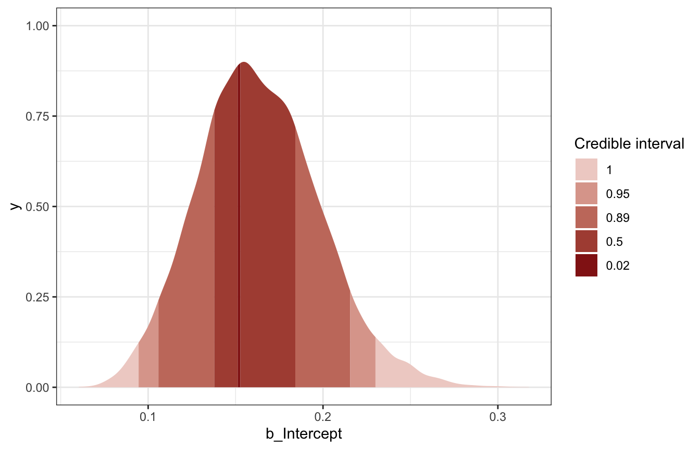
pi_stan_samples |>
spread_draws(pi) |>
median_hdci(pi, .width = c(0.5, 0.89, 0.95))
## # A tibble: 3 × 6
## pi .lower .upper .width .point .interval
## <dbl> <dbl> <dbl> <dbl> <chr> <chr>
## 1 0.161 0.137 0.182 0.5 median hdci
## 2 0.161 0.108 0.217 0.89 median hdci
## 3 0.161 0.0987 0.234 0.95 median hdcipi_stan_samples |>
spread_draws(pi) |>
ggplot(aes(x = pi)) +
stat_slab(aes(fill_ramp = stat(level)),
.width = c(0.02, 0.5, 0.89, 0.95, 1),
point_interval = "median_hdci",
fill = clrs[3]) +
scale_fill_ramp_discrete(range = c(0.2, 1)) +
labs(fill_ramp = "Credible interval")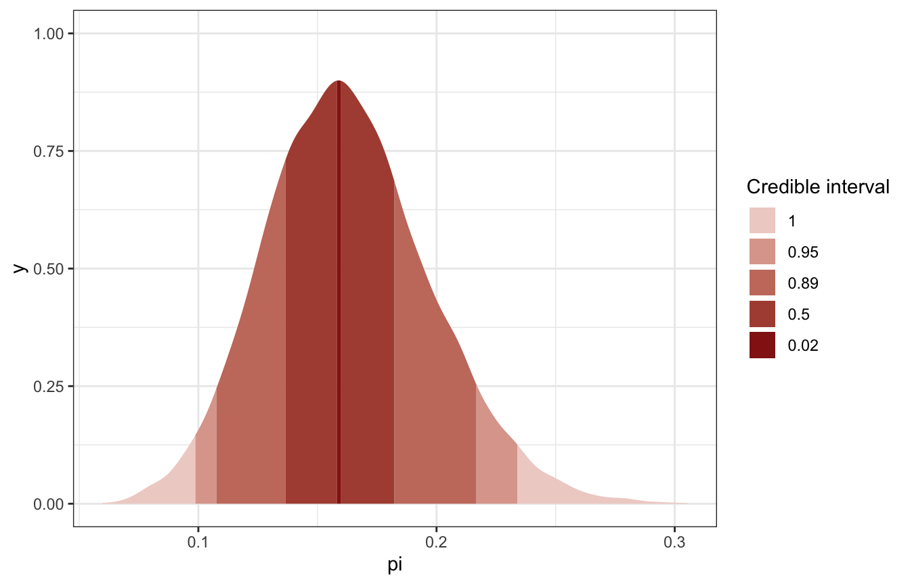
8.2: Posterior hypothesis testing
What if we read somewhere that fewer than 20% of museum artists are Gen X or younger? We can calculate the posterior probability of this scenario, or \(P(\pi < 0.2 \mid Y = 14)\)
With the exact posterior, that’s super easy:
post_prob <- pbeta(0.2, 18, 92)
post_prob
## [1] 0.8489856
ggplot() +
stat_function(fun = ~dbeta(., 18, 92), geom = "area",
fill = colorspace::lighten(clrs[3], 0.4)) +
stat_function(fun = ~dbeta(., 18, 92), geom = "area",
xlim = c(0, 0.2),
fill = clrs[3]) +
geom_vline(xintercept = 0.2) +
xlim(c(0, 0.4)) +
labs(x = "π")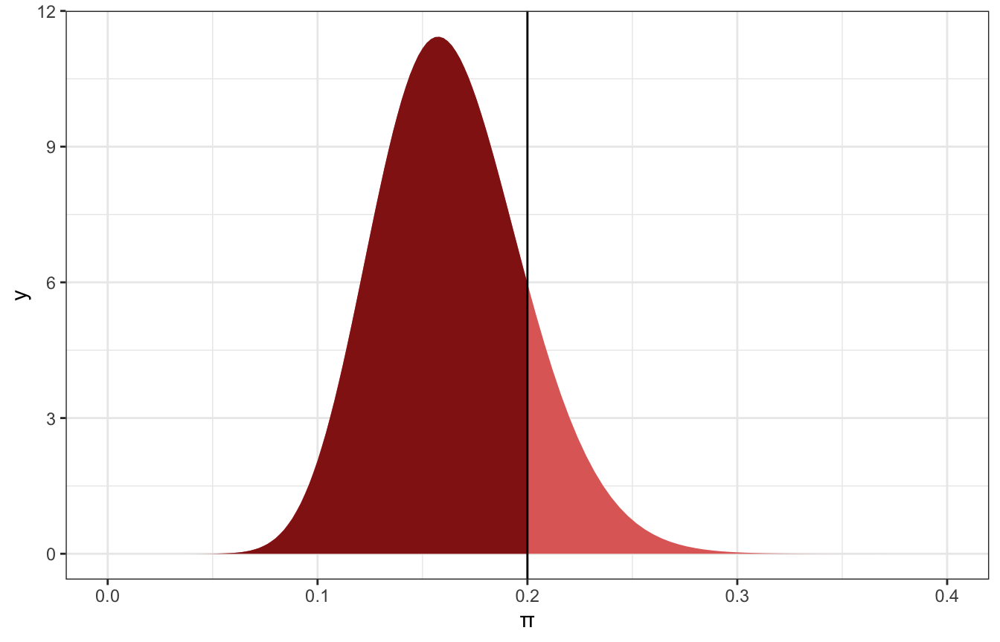
85% of the distribution is below 0.2, so we can say there’s an 85% chance that Gen X artists constitute 20% or fewer of modern art museum artists.
That’s easy!
Here it is with MCMC:
model_pi_brms |>
spread_draws(b_Intercept) |>
count(b_Intercept < 0.2) |>
mutate(prob = n / sum(n))
## # A tibble: 2 × 3
## `b_Intercept < 0.2` n prob
## <lgl> <int> <dbl>
## 1 FALSE 2332 0.146
## 2 TRUE 13668 0.854
model_pi_brms |>
spread_draws(b_Intercept) |>
ggplot(aes(x = b_Intercept)) +
stat_halfeye(aes(fill_ramp = stat(x < 0.2)), fill = clrs[3]) +
scale_fill_ramp_discrete(from = colorspace::lighten(clrs[3], 0.4), guide = "none")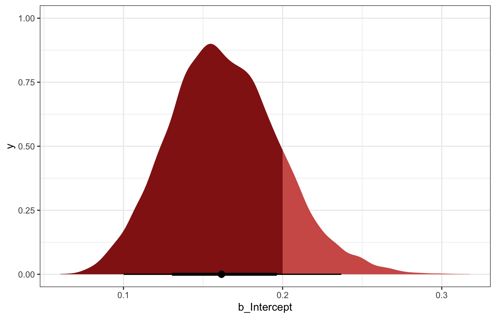
pi_stan_samples |>
spread_draws(pi) |>
count(pi < 0.2) |>
mutate(prob = n / sum(n))
## # A tibble: 2 × 3
## `pi < 0.2` n prob
## <lgl> <int> <dbl>
## 1 FALSE 1445 0.144
## 2 TRUE 8555 0.856
pi_stan_samples |>
spread_draws(pi) |>
ggplot(aes(x = pi)) +
stat_halfeye(aes(fill_ramp = stat(x < 0.2)), fill = clrs[3]) +
scale_fill_ramp_discrete(from = colorspace::lighten(clrs[3], 0.4), guide = "none")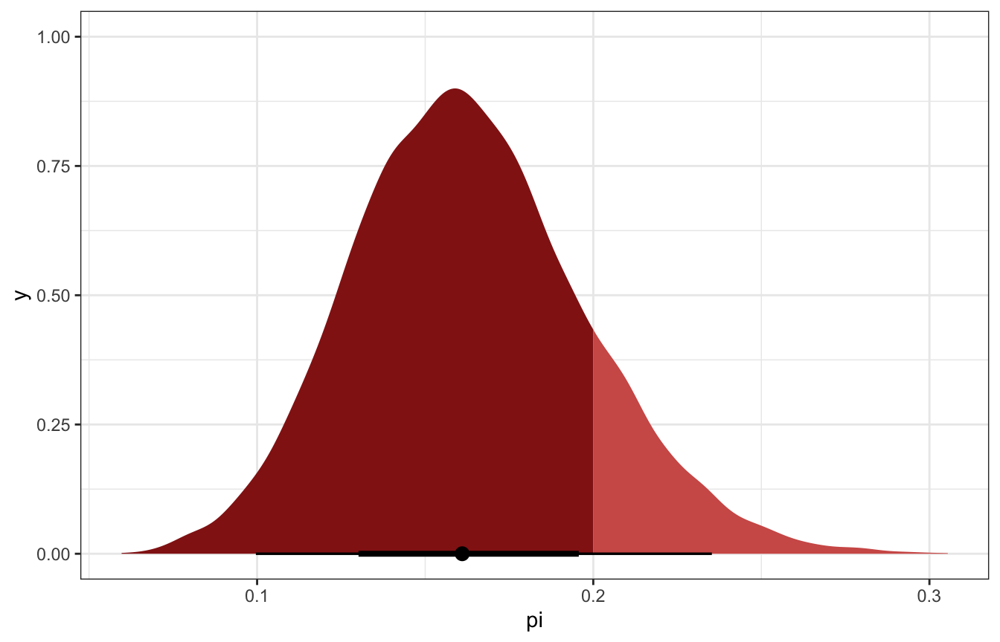
One-sided tests (probability of direction)
We can also use a hypothesis testing framework and present two competing hypotheses:
\[ \begin{split} H_0: & \; \; \pi \ge 0.2 \\ H_a: & \; \; \pi < 0.2 \end{split} \]
We already know the probability of \(H_a\) (0.849), so the probability of \(H_0\) is 1 minus that, or 0.151. The posterior odds is the ratio of those two probabilities
\[ \text{posterior odds} = \frac{P(H_a \mid Y = 14)}{P(H_0 \mid Y = 14)} = \frac{0.849}{0.151} \approx 5.622 \]
post_odds <- post_prob / (1 - post_prob)
post_odds
## [1] 5.621883That means that π is ≈6 times more likely to be below 20% than to be above 20%
That’s all based on the posterior though. Back before we knew anything, we had a prior of \(\operatorname{Beta}(6, 4)\), an in that world, we had a 9% chance that it was true and a 91% chance that it was all false
prior_prob <- pbeta(0.2, 4, 6)
prior_prob
## [1] 0.08564173
1 - prior_prob
## [1] 0.9143583So the prior odds were only 1 in 10:
prior_odds <- prior_prob / (1 - prior_prob)
prior_odds
## [1] 0.09366321Finally, we can do something more useful with these prior and posterior odds and calculate the Bayes Factor, which is just their ratio:
\[ \text{Bayes Factor} = \frac{\text{Posterior odds}}{\text{Prior odds}} \]
BF <- post_odds / prior_odds
BF
## [1] 60.02232After learning about 14 Gen X artists, “the posterior odds of our hypothesis … are roughly 60 times higher than the prior odds”, which is “fairly convincing”
No significance testing, no failing to reject nulls. Just vibes.
Evid.Ratio here is the posterior probability of the hypothesis being true / posterior probability of the hypothesis not being true, or the same as post_odds above.
h <- hypothesis(model_pi_brms, "Intercept < 0.2")
h
## Hypothesis Tests for class b:
## Hypothesis Estimate Est.Error CI.Lower CI.Upper Evid.Ratio
## 1 (Intercept)-(0.2) < 0 -0.04 0.03 -0.09 0.02 5.86
## Post.Prob Star
## 1 0.85
## ---
## 'CI': 90%-CI for one-sided and 95%-CI for two-sided hypotheses.
## '*': For one-sided hypotheses, the posterior probability exceeds 95%;
## for two-sided hypotheses, the value tested against lies outside the 95%-CI.
## Posterior probabilities of point hypotheses assume equal prior probabilities.
plot(h)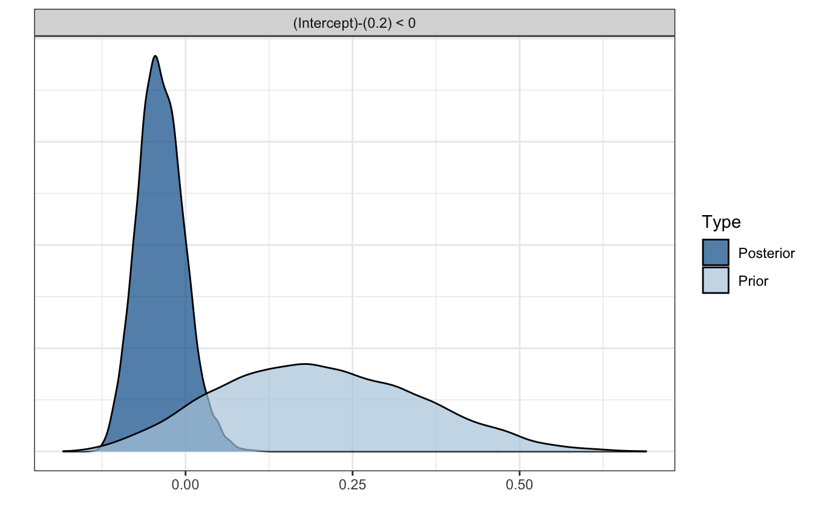
If we want the same Bayes Factor ratio that Bayes Rules! calculates, we need to use the evidence ratio from brms and calculate prior_odds by hand:
prior_prob <- pbeta(0.2, 4, 6)
prior_odds <- prior_prob / (1 - prior_prob)
post_odds_brms <- h$hypothesis$Evid.Ratio
BF_brms <- post_odds_brms / prior_odds
BF_brms
## [1] 62.57594Two-sided tests (ROPE stuff)
What if we want to know whether or not 30% of museum artists are Gen X or younger, not just a direction? Now we’re dealing with two sides:
\[ \begin{split} H_0: & \; \; \pi = 0.3 \\ H_a: & \; \; \pi \ne 0.3 \\ \end{split} \]
We already know the 95% credible interval for π, and 0.3 doesn’t really fit well in it:
ggplot() +
stat_function(fun = ~dbeta(., 18, 92), geom = "area",
fill = colorspace::lighten(clrs[3], 0.9)) +
stat_function(fun = ~dbeta(., 18, 92), geom = "area",
xlim = qbeta(c(0.025, 0.975), 18, 92),
fill = clrs[3]) +
geom_vline(xintercept = 0.3) +
xlim(c(0, 0.4)) +
labs(x = "π", fill = "Credible interval")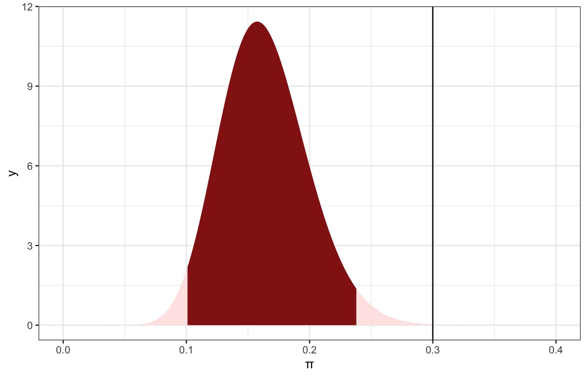
That provides us with good evidence that the hypothesis that 30% of artists are Gen X is not correct. It’s subtantially outside of the credible interval. But what does substantial mean? We get to define that.
We can be like Kruschke and define a buffer around 0.3, or a region of practical equivalence (ROPE). Here we’ll do 0.3±0.05, or between 0.25 and 0.35. We can calculate how much of the posterior is outside of that ROPE.
Since we know the actual posterior is \(\operatorname{Beta}(18, 92)\), we can find the percentage of the area of the curve that falls in the ROPE with pbeta():
prop_in_rope <- pbeta(0.35, 18, 92) - pbeta(0.25, 18, 92)
prop_in_rope
## [1] 0.01250077
1 - prop_in_rope
## [1] 0.987499298.7% of the posterior is outside of that ROPE. I’d say a value of 30% is pretty substantially far away from the posterior and thus really unlikely.
ggplot() +
stat_function(fun = ~dbeta(., 18, 92), geom = "area",
fill = colorspace::lighten(clrs[3], 0.9)) +
stat_function(fun = ~dbeta(., 18, 92), geom = "area",
xlim = qbeta(c(0.025, 0.975), 18, 92),
fill = clrs[3]) +
annotate(geom = "rect", xmin = 0.25, xmax = 0.35, ymin = -Inf, ymax = Inf, alpha = 0.3) +
geom_vline(xintercept = 0.3) +
xlim(c(0, 0.4)) +
labs(x = "π", fill = "Credible interval")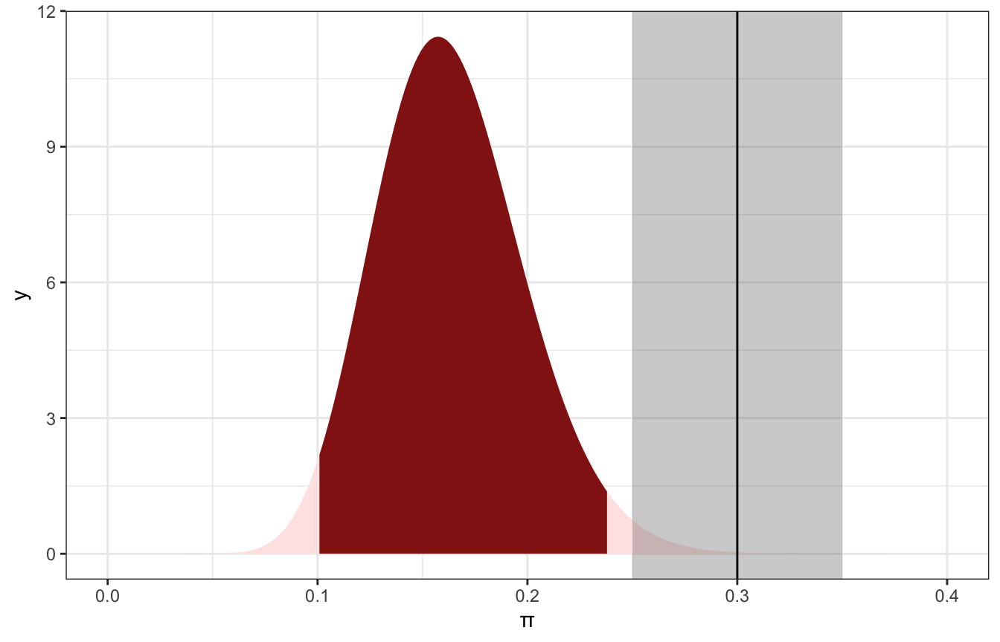
We can do this with the MCMC draws too and we get the same results:
model_pi_brms |>
spread_draws(b_Intercept) |>
summarize(prop_in_rope = sum(b_Intercept > 0.25 & b_Intercept < 0.35) / n(),
prop_outside_rope = 1 - prop_in_rope)
## # A tibble: 1 × 2
## prop_in_rope prop_outside_rope
## <dbl> <dbl>
## 1 0.0119 0.988pi_stan_samples |>
spread_draws(pi) |>
summarize(prop_in_rope = sum(pi > 0.25 & pi < 0.35) / n(),
prop_outside_rope = 1 - prop_in_rope)
## # A tibble: 1 × 2
## prop_in_rope prop_outside_rope
## <dbl> <dbl>
## 1 0.0109 0.9898.3: Posterior prediction
(This stuff is all covered in my guide here too)
We get data for 20 more pieces of art at the museum. Based on what we know about π, how many would we predict would be by Gen X artists?
It’s reasonable to think 3 (since 20 * 0.16 = 3), but that misses out on two levels of uncertainty:
- Sampling variability in the data - even if π is truly 0.16, the amount we get in the sample will vary just because of randomness
- Posterior variability in π - it could be anywhere between 0.1 and 0.24
The posterior predictive model takes both kinds of uncertainty into account
There’s technically a mathy way to get at posterior predictions, and the book covers it, but it’s a complicated mess and they even conclude by saying “In this book, we’ll never need to do something like this again”
In the book, the actual posterior predictive probability that 3 of the 20 new artists will be Gen X, based on a posterior that saw 14 (i.e. the model we created), is 0.2217.
We can approximate that exact 0.2217 with the MCMC draws too. With brms models we can use posterior_predict(), posterior_linpred(), and posterior_epred() to extract different types of posterior outcomes on different scales. With raw Stan output, we have to do a little more work ourselves.
We want to use predicted_draws() since that incorporates both kinds of uncertainty, and it returns values that are predicted counts, not probabilities or π (see my guide for more)
predicted_genx_after_20 <- model_pi_brms |>
predicted_draws(newdata = tibble(artworks = 20)) |>
group_by(.prediction) |>
summarize(n = n()) |>
mutate(prop = n / sum(n))
predicted_genx_after_20
## # A tibble: 13 × 3
## .prediction n prop
## <int> <int> <dbl>
## 1 0 637 0.0398
## 2 1 1963 0.123
## 3 2 3297 0.206
## 4 3 3533 0.221
## 5 4 2904 0.182
## 6 5 1881 0.118
## 7 6 1097 0.0686
## 8 7 432 0.027
## 9 8 183 0.0114
## 10 9 52 0.00325
## 11 10 16 0.001
## 12 11 4 0.00025
## 13 14 1 0.0000625
ggplot(predicted_genx_after_20, aes(x = factor(.prediction), y = prop)) +
geom_col()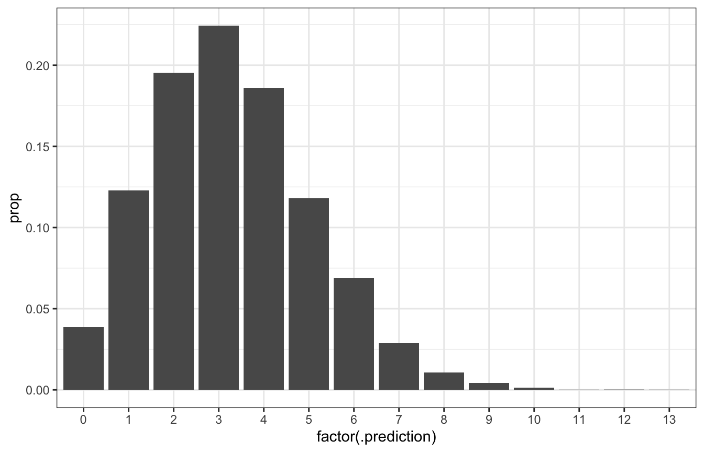
# Posterior predictive probability that 3/20 will be Gen X is roughly the same
# as 0.2217!
predicted_genx_after_20 |>
filter(.prediction == 3) |>
pull(prop)
## [1] 0.2208125We can also get the variability in just π if we wanted by using linpred_draws():
model_pi_brms |>
linpred_draws(newdata = tibble(artworks = 20)) |>
ungroup() |>
ggplot(aes(x = .linpred)) +
stat_halfeye()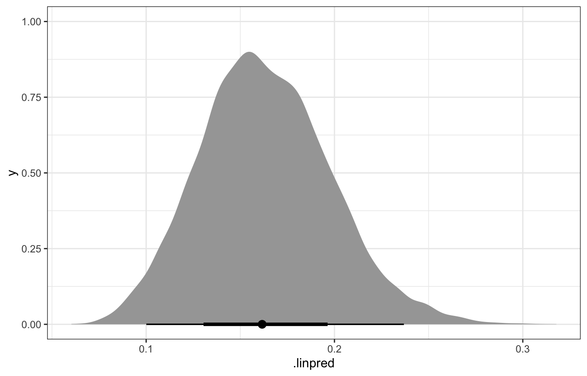
And if we use epred_draws(), we’ll get the expected number of Gen X artworks:
model_pi_brms |>
epred_draws(newdata = tibble(artworks = 20)) |>
ungroup() |>
ggplot(aes(x = .epred)) +
stat_halfeye()
Lovely.
Raw Stan requires a little more work. We could theoretically use Stan to generate posterior predictions with a generated quantities block:
generated quantities {
vector[1000] num_genx_rep;
for (i in 1:1000) {
num_genx_rep[i] = binomial_rng(20, pi);
}
}But that requires either hard-coding two numbers into the Stan code: 1000 for the number of simulations and 20 for the number of new artworks. If we want to change any of those, we’d have to recompile, which is tedious.
Alternatively, we could add a couple variables to the data block and pass them through R:
data {
// other variables
int<lower=1> n_sims;
int<lower=1> new_artworks;
}
// other blocks
generated quantities {
vector[n_sims] num_genx_rep;
for (i in 1:n_sims) {
num_genx_rep[i] = binomial_rng(new_artworks, pi);
}
}We’d then need to include values for those new variables in the list of data we pass to Stan:
pi_stan_samples <- model_pi_stan$sample(
data = list(artworks = 100, num_genx = 14, new_artworks = 20, n_sims = 1000),
parallel_chains = 4, iter_warmup = 2500, iter_sampling = 2500,
refresh = 0, seed = BAYES_SEED
)That would work great and the results from Stan would include 1000 predictions for the number of Gen X artists. But it feels a little excessive to keep rerunning the original 14-artworks model over and over for different numbers of new artworks.
So instead we can use R to build the posterior predictions, since we have all the posterior values of π in the MCMC chains, and since all we’re really doing with Stan is using Stan’s version of rbinom() anyway (binomial_rng()).
predicted_genx_after_20_stan <- pi_stan_samples |>
spread_draws(pi) |>
mutate(.prediction = rbinom(n(), size = 20, prob = pi))
predicted_genx_after_20_stan_summarized <- predicted_genx_after_20_stan |>
group_by(.prediction) |>
summarize(n = n()) |>
mutate(prop = n / sum(n))
predicted_genx_after_20_stan
## # A tibble: 10,000 × 5
## .chain .iteration .draw pi .prediction
## <int> <int> <int> <dbl> <int>
## 1 1 1 1 0.157 4
## 2 1 2 2 0.151 1
## 3 1 3 3 0.189 5
## 4 1 4 4 0.226 6
## 5 1 5 5 0.192 3
## 6 1 6 6 0.210 5
## 7 1 7 7 0.210 4
## 8 1 8 8 0.174 5
## 9 1 9 9 0.157 5
## 10 1 10 10 0.153 3
## # … with 9,990 more rows
ggplot(predicted_genx_after_20_stan_summarized,
aes(x = factor(.prediction), y = prop)) +
geom_col()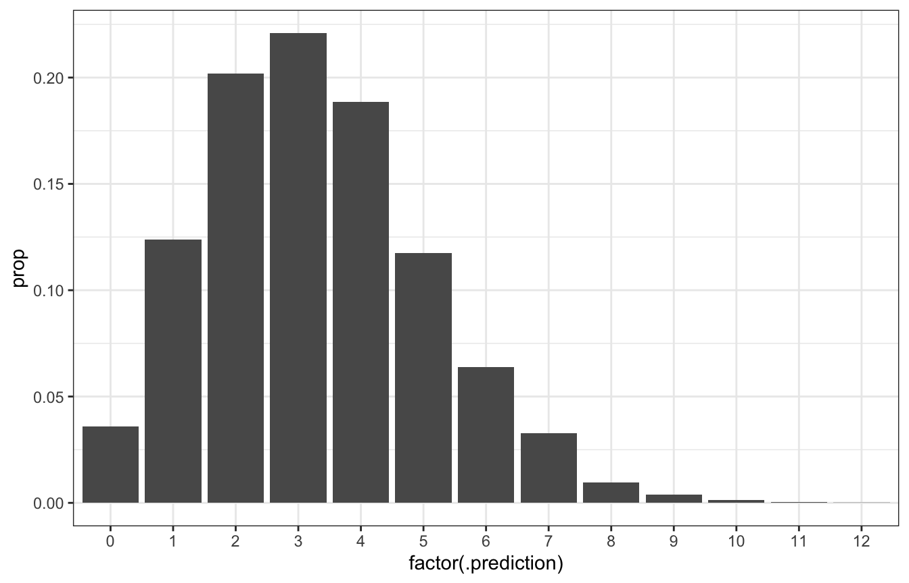
# Posterior predictive probability that 3/20 will be Gen X is roughly the same
# as 0.2217!
predicted_genx_after_20_stan_summarized |>
filter(.prediction == 3) |>
pull(prop)
## [1] 0.225We can also get the equivalent of posterior_epred() by calculating the average of the predictive posterior:
epred <- predicted_genx_after_20_stan |>
summarize(epred = mean(.prediction)) |>
pull(epred)
epred
## [1] 3.2581
ggplot(predicted_genx_after_20_stan, aes(x = .prediction)) +
stat_count() +
geom_vline(xintercept = epred)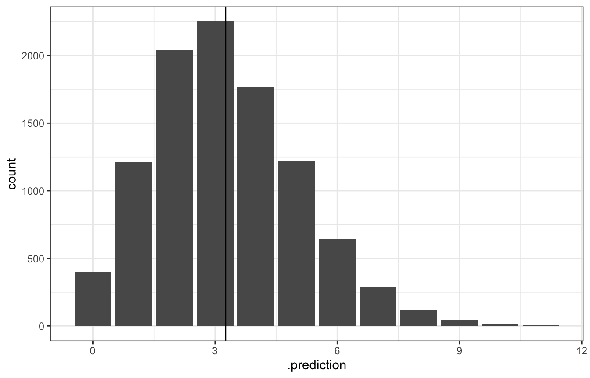
I haven’t figured out a way to get posterior_linpred() (the variability of just π) with raw Stan like this though. :(
8.4: Posterior analysis with MCMC
Oh ha, this whole section shows how to do everything above with Stan, but I already did that above with both brms and raw Stan, so just, um look up there ↑.